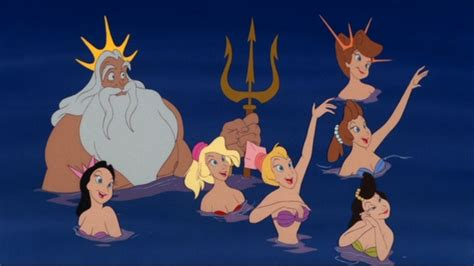
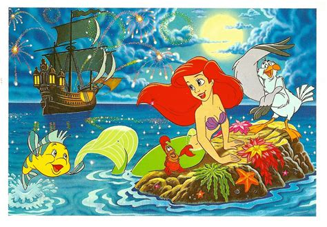
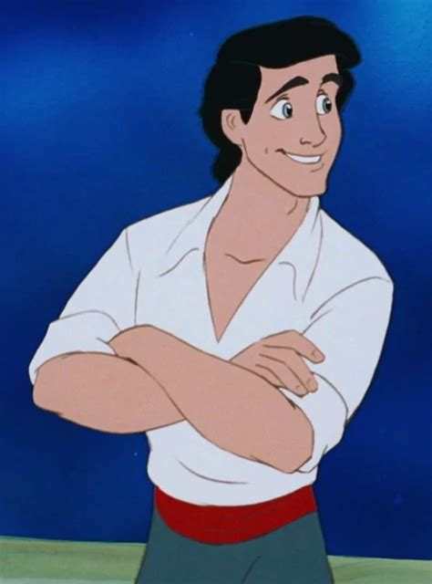
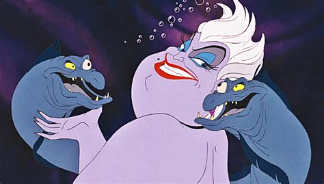
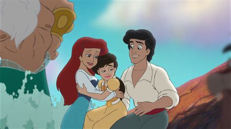

Her story
Ariel is the youngest daughter of King Triton and Queen Athena of an underwater kingdom called Atlantica. She is often rebellious, longs to be a part of the human world and would do anything for it.
Family
Ariels Father King Triton and her 6 sisters:
- Attina
- Alana
- Adella
- Aquata
- Arista
- Andrina
Friends
Her friends are:
- Flounder, a yellow and blue tropical fish
- Scuttle, a seagull
- Sebastian, a red Jamaican-accented crab
Love interest
Eric is a young 18-year-old human prince who lives in a castle in a small costal town in Europe. He is rescued by Ariel when he almost drowns in a storm at sea. She drags him to shore and sings to him, leaving Eric haunted by her voice.
Enemys
Ursula, the sea witch and Flotsam and Jetsam, Ursula's green moray eel minions.
Daugther
There is a second movie, where she has a daughter called Melody.